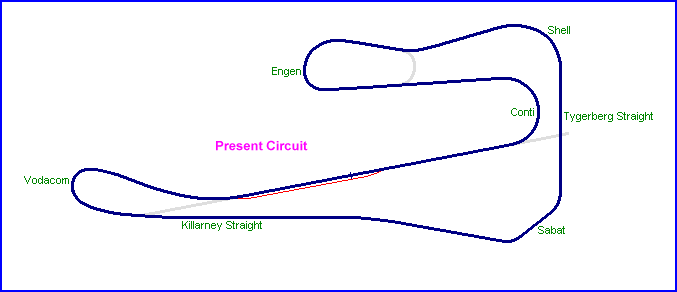

Killarney, Cape Town, South Africa
Type: Permanent Road Course
Length: 2.030 Miles / 3.267 km (1960+)
Used: 1947+
Photographs Taken: 7th February, 2004
Situated about 10km Northeast of the Cape Town city center. Racing first took place here in 1947, albeit only on an old stretch of road that had once formed part of the main road from Cape Town to Malmesbury. Shortly afterwards, a link was built to transform the strip into a very basic circuit. Since then it has become the home of motorsport in the Western Cape Province and the circuit has seen four different formats over the years. The original configuration was shaped like a narrow triangle with a tight hairpin corner also forming part of this circuit in the vicinity of the present Sabat corner (ex-Malmesbury Sweep). In 1952, the 'Tower Bend' and 'Big Sweep' sections were added; the remains of these corners are still visable today in the access road that circumnavigates the clubhouse. In 1955, the circuit was extended again to include the present day hairpin at Cape Town Corner (now Vodacom). The current circuit is 3.267 km in length and originates from 1960. No significant changes have been made since then, apart from run-off areas and other safety related changes. The pit complex has been upgraded and several workshops and garage facilities have been erected for competitors.
|| Contents | Original circuit photos | Present circuit photos || Home ||

Click on links above to access photographs
Return to racingcircuits.net's Photo Archive Main Index
Text & Graphics ©Marius Matthee. Reproduced here with kind permission.